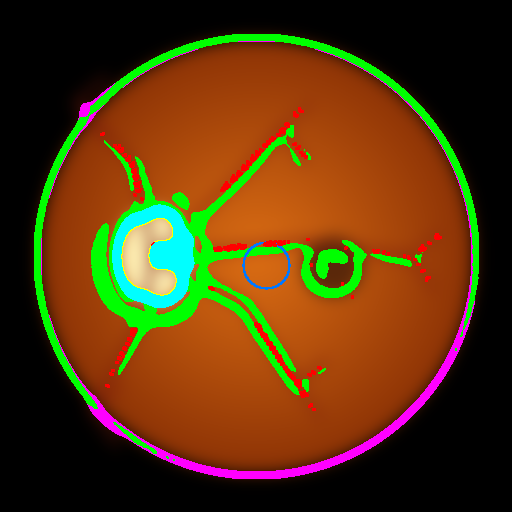
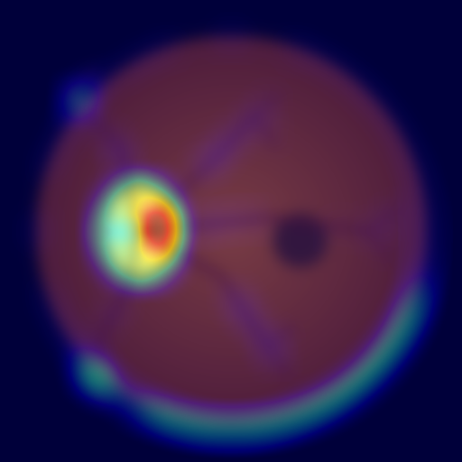

Patient Case #3: sample_03_blurry.png
REFERRAL REQUIRED
1. Original Fundus
2. Quality Enhanced (CLAHE)

3. Lesion Overlay

4. Grad-CAM Explainability
Assigned DR Grade: Proliferative DR (Level 4)
Calibrated Confidence: 72.5%
Grad-CAM Lesion Overlap: 0.33
PATIENT CLINICAL DIAGNOSTIC REPORT ---------------------------------------- • Severity Grade: Proliferative DR (Level 4) (Confidence: 72.5%) • Referral Decision: REFERRAL REQUIRED (Level 2+ Boundary Exceeded) • Lesion Telemetry: MAs: 98, Exudates: 1 (3987 px), Hemorrhages: 11 (4808 px). • Active Neovascularization: PRESENT (Grade 4 Marker) • Grad-CAM Co-localization Correlation: 0.33 (High spatial overlap with detected lesions)